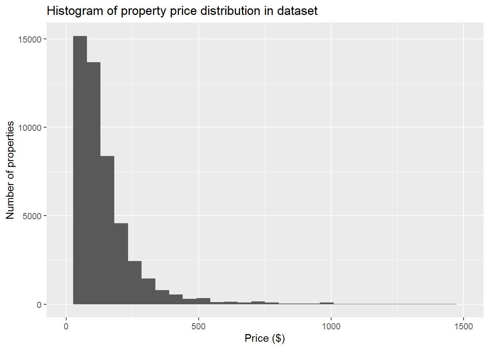
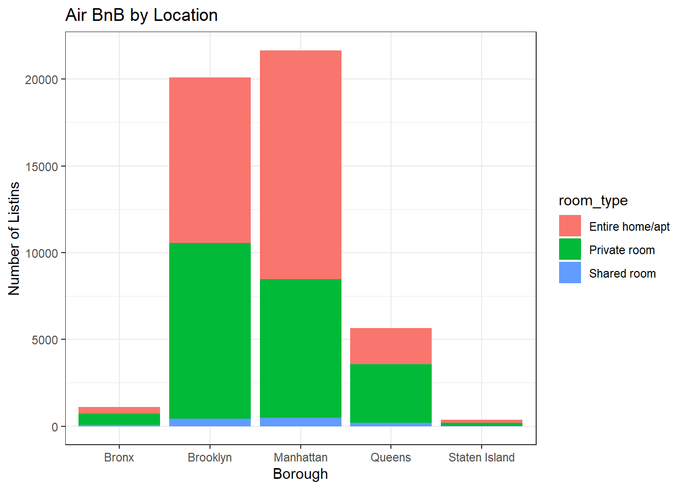
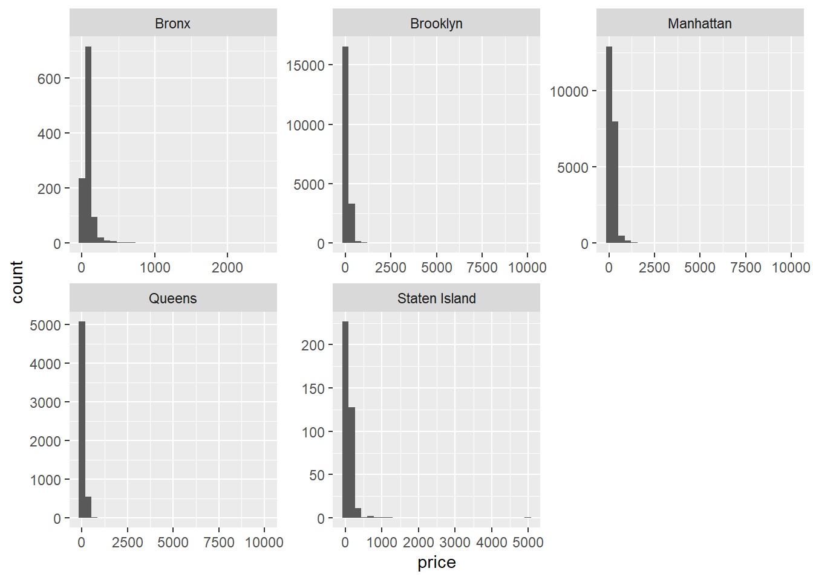
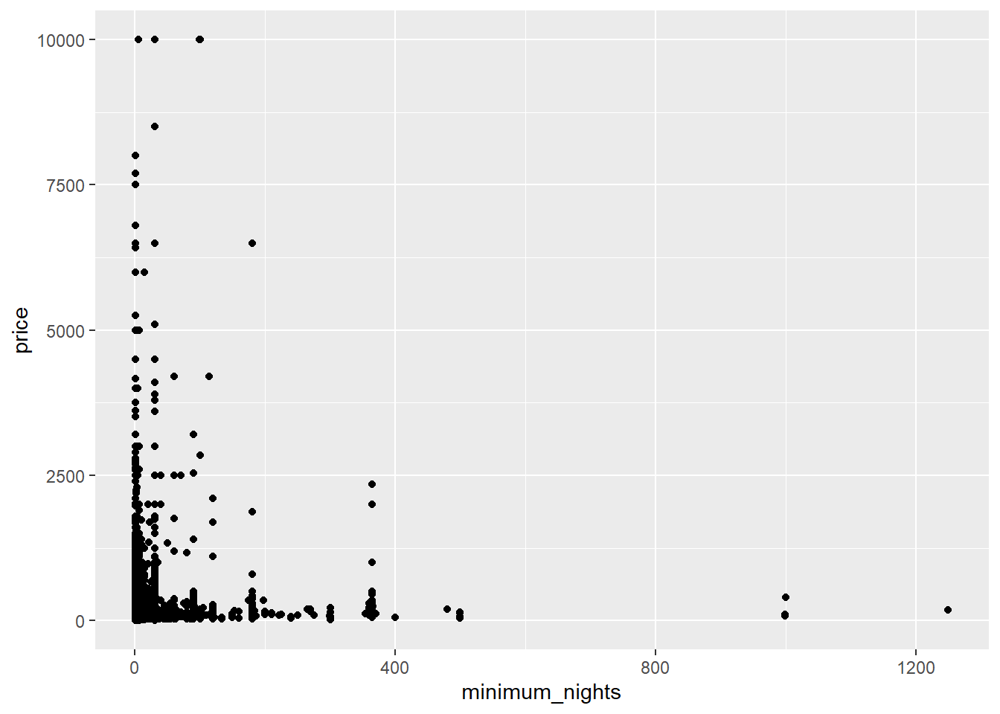
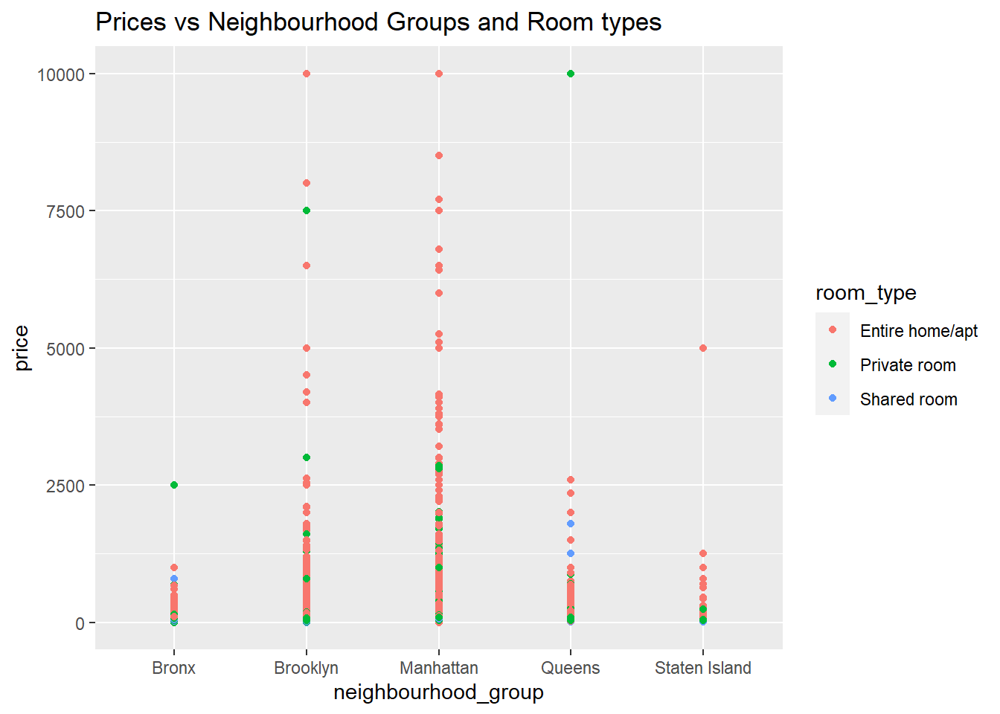

library(tidyverse)
library(ggplot2)
knitr::opts_chunk$set(echo = TRUE, warning=FALSE, message=FALSE)Challenge 7
challenge_7
hotel_bookings
australian_marriage
air_bnb
eggs
abc_poll
faostat
usa_households
Visualizing Multiple Dimensions
Challenge Overview
Today’s challenge is to:
- read in a data set, and describe the data set using both words and any supporting information (e.g., tables, etc)
- tidy data (as needed, including sanity checks)
- mutate variables as needed (including sanity checks)
- Recreate at least two graphs from previous exercises, but introduce at least one additional dimension that you omitted before using ggplot functionality (color, shape, line, facet, etc) The goal is not to create unneeded chart ink (Tufte), but to concisely capture variation in additional dimensions that were collapsed in your earlier 2 or 3 dimensional graphs.
- Explain why you choose the specific graph type
- If you haven’t tried in previous weeks, work this week to make your graphs “publication” ready with titles, captions, and pretty axis labels and other viewer-friendly features
R Graph Gallery is a good starting point for thinking about what information is conveyed in standard graph types, and includes example R code. And anyone not familiar with Edward Tufte should check out his fantastic books and courses on data visualizaton.
(be sure to only include the category tags for the data you use!)
Read in data
Read in one (or more) of the following datasets, using the correct R package and command.
- air_bnb ⭐⭐⭐
data <- read_csv("_data/AB_NYC_2019.csv")
data# A tibble: 48,895 × 16
id name host_id host_…¹ neigh…² neigh…³ latit…⁴ longi…⁵ room_…⁶ price
<dbl> <chr> <dbl> <chr> <chr> <chr> <dbl> <dbl> <chr> <dbl>
1 2539 Clean & … 2787 John Brookl… Kensin… 40.6 -74.0 Privat… 149
2 2595 Skylit M… 2845 Jennif… Manhat… Midtown 40.8 -74.0 Entire… 225
3 3647 THE VILL… 4632 Elisab… Manhat… Harlem 40.8 -73.9 Privat… 150
4 3831 Cozy Ent… 4869 LisaRo… Brookl… Clinto… 40.7 -74.0 Entire… 89
5 5022 Entire A… 7192 Laura Manhat… East H… 40.8 -73.9 Entire… 80
6 5099 Large Co… 7322 Chris Manhat… Murray… 40.7 -74.0 Entire… 200
7 5121 BlissArt… 7356 Garon Brookl… Bedfor… 40.7 -74.0 Privat… 60
8 5178 Large Fu… 8967 Shunic… Manhat… Hell's… 40.8 -74.0 Privat… 79
9 5203 Cozy Cle… 7490 MaryEl… Manhat… Upper … 40.8 -74.0 Privat… 79
10 5238 Cute & C… 7549 Ben Manhat… Chinat… 40.7 -74.0 Entire… 150
# … with 48,885 more rows, 6 more variables: minimum_nights <dbl>,
# number_of_reviews <dbl>, last_review <date>, reviews_per_month <dbl>,
# calculated_host_listings_count <dbl>, availability_365 <dbl>, and
# abbreviated variable names ¹host_name, ²neighbourhood_group,
# ³neighbourhood, ⁴latitude, ⁵longitude, ⁶room_typeBriefly describe the data
This dataset contains approximately 49000 and 16 columns of information about various AirBNB units advertised in New York City in 2019. It contains information about the host name, neighborhood and neighborhood group, property type, price, and location for each property.
Tidy Data (as needed)
We can do some tidying because we can see that there are some N/A values in the reviews per month.Because there are no reviews yet, we can replace the N/A values with 0.
replace_na(data, list(reviews_per_month = 0))# A tibble: 48,895 × 16
id name host_id host_…¹ neigh…² neigh…³ latit…⁴ longi…⁵ room_…⁶ price
<dbl> <chr> <dbl> <chr> <chr> <chr> <dbl> <dbl> <chr> <dbl>
1 2539 Clean & … 2787 John Brookl… Kensin… 40.6 -74.0 Privat… 149
2 2595 Skylit M… 2845 Jennif… Manhat… Midtown 40.8 -74.0 Entire… 225
3 3647 THE VILL… 4632 Elisab… Manhat… Harlem 40.8 -73.9 Privat… 150
4 3831 Cozy Ent… 4869 LisaRo… Brookl… Clinto… 40.7 -74.0 Entire… 89
5 5022 Entire A… 7192 Laura Manhat… East H… 40.8 -73.9 Entire… 80
6 5099 Large Co… 7322 Chris Manhat… Murray… 40.7 -74.0 Entire… 200
7 5121 BlissArt… 7356 Garon Brookl… Bedfor… 40.7 -74.0 Privat… 60
8 5178 Large Fu… 8967 Shunic… Manhat… Hell's… 40.8 -74.0 Privat… 79
9 5203 Cozy Cle… 7490 MaryEl… Manhat… Upper … 40.8 -74.0 Privat… 79
10 5238 Cute & C… 7549 Ben Manhat… Chinat… 40.7 -74.0 Entire… 150
# … with 48,885 more rows, 6 more variables: minimum_nights <dbl>,
# number_of_reviews <dbl>, last_review <date>, reviews_per_month <dbl>,
# calculated_host_listings_count <dbl>, availability_365 <dbl>, and
# abbreviated variable names ¹host_name, ²neighbourhood_group,
# ³neighbourhood, ⁴latitude, ⁵longitude, ⁶room_typeApart from this, It appears that the data is suitable for the analysis I intend to conduct and does not require any modification.
Visualization with Multiple Dimensions
From my previous challenge I would like to improve the exploratory analysis graphs to add more dimensionality and add also use the ggplot functionality.
Below is one of the original graphs that I created:
We can analyze the property price distribution to get a good idea of how expensive or cheap each property is. We see that most properties are lesser than 500$ from the below graph:
ggplot(data,aes(x=price)) +
geom_histogram() +
xlim(0, 1500) +
xlab("Price ($)") +
ylab("Number of properties") +
ggtitle("Histogram of property price distribution in dataset")
Another graph that I created broke down listings based on boroughs of where theyare located by . We find that Manhattan would have the most since it attracts the most tourists. Brooklyn has the second highest.
ggplot(data, aes(neighbourhood_group, fill = room_type)) + geom_bar() +
theme_bw() +
labs(title = "Air BnB by Location ", y = "Number of Listins", x = "Borough")
Now, I would like to analyze further.
We can have individual graphs to show the prices in various boroughs to dig deeper and analyze further.
data %>%
ggplot(aes(price))+
geom_histogram()+
facet_wrap(vars(neighbourhood_group),scales="free")
We can find some interesting relationships if we compare both minimum number of nights and price if we plot them together.
data %>%
ggplot(aes(minimum_nights,price))+
geom_point()
Finally, We can also add some extra dimensions to get some better analysis and analyze the price compared to both neighborhood groups and room types. We see that there are a lot of Entire homes in Manhattan and are also the most expensive.
ggplot(data,aes(neighbourhood_group,price,color = room_type))+geom_point()+labs(title = "Prices vs Neighbourhood Groups and Room types")